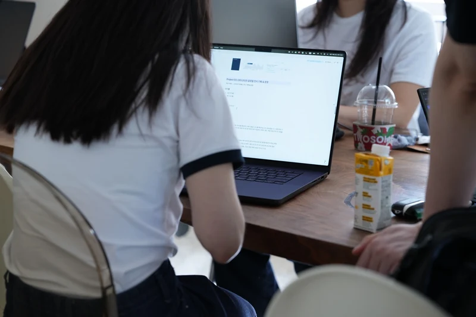
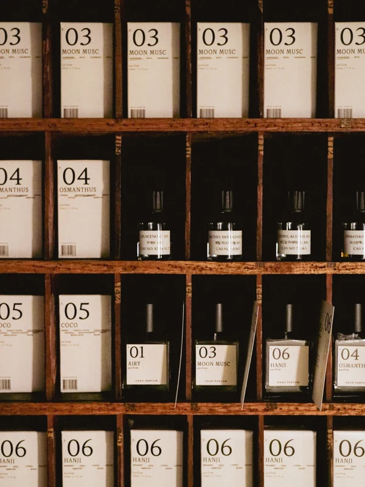
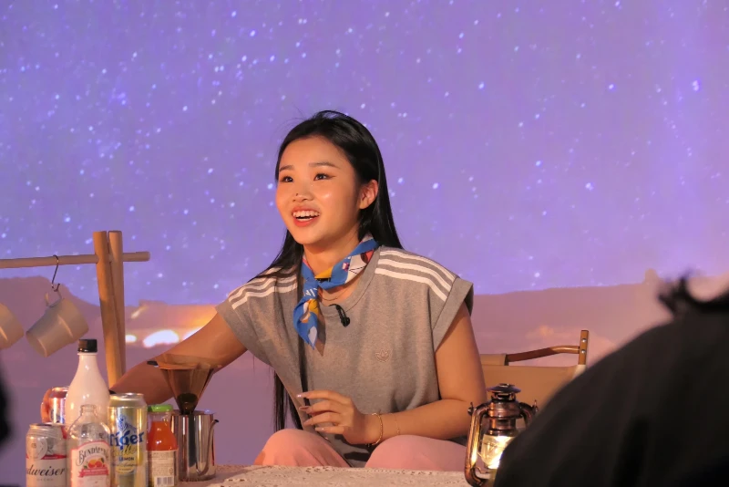
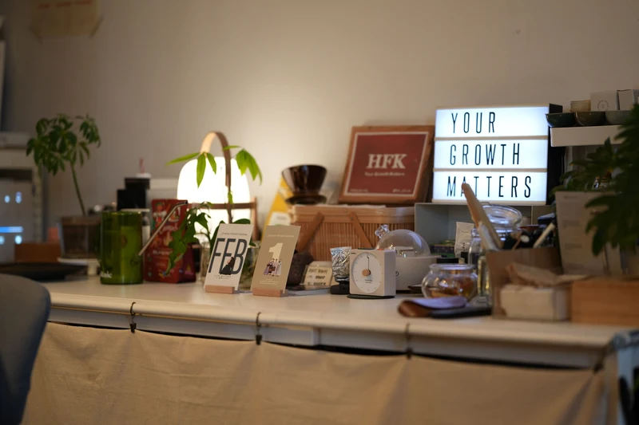

샘플 열기 → TEMPLATE A성과·전문성 강조형
숫자와 실적이 첫인상을 만듭니다. 랭킹·평점·건수·매출 등 검증 가능한 지표를 스프링 티커로 굴리고, 프로젝트마다 대표 성과를 붙여 신뢰를 쌓는 유형.
책 속 근거 — 5장 ‘전문성을 브랜드로 바꾼 사람들’ (쏘피 · 성지연 · 커리어디벨로퍼J). 고객이 만족한 ‘결과’들이 쌓여 나를 자연스럽게 브랜딩해준다.
숫자 티커성과 그리드신뢰 마퀴성과 뱃지 카드 샘플 보기 →Branding Homepage Template Showcase
「작은 브랜드 전성시대가 온다」 원고 193p 속 40여 개 브랜드 사례를 학습해 도출한 템플릿 유형입니다. 디자인 토큰은 pertential100.com, 인터랙션은 goldenrecords.kr 분석 결과를 이식했습니다. 카드를 눌러 유형별 샘플 홈페이지를 살펴보세요.
Templates

샘플 열기 → TEMPLATE A숫자와 실적이 첫인상을 만듭니다. 랭킹·평점·건수·매출 등 검증 가능한 지표를 스프링 티커로 굴리고, 프로젝트마다 대표 성과를 붙여 신뢰를 쌓는 유형.
책 속 근거 — 5장 ‘전문성을 브랜드로 바꾼 사람들’ (쏘피 · 성지연 · 커리어디벨로퍼J). 고객이 만족한 ‘결과’들이 쌓여 나를 자연스럽게 브랜딩해준다.
숫자 티커성과 그리드신뢰 마퀴성과 뱃지 카드 샘플 보기 →
샘플 열기 → TEMPLATE B고퀄리티 이미지와 무드가 말하게 합니다. 풀블리드 히어로, 이미지 우선 갤러리, 호버 시에만 드러나는 절제된 텍스트 — 페이지 자체가 공간에 들어서는 경험이 되는 유형.
책 속 근거 — 1장 ‘경험을 파는 브랜드’, 8장 ‘문화를 만드는 사람들’ (한아조 · 밑미 · 마이시크릿덴 · 무릉). 세심하게 설계된 경험은 광고 없이도 줄을 세운다.
풀블리드 히어로이미지 갤러리호버 줌역방향 마퀴 샘플 보기 →브랜드의 철학과 여정이 주인공입니다. 인용구 히어로, 한 문장씩 리빌되는 신조, 세로 타임라인 — 창업자 페르소나와 세계관으로 공감을 만드는 유형.
책 속 근거 — 3장 ‘창업자의 페르소나가 브랜드가 될 때’, 10장 ‘세계관이 브랜드가 되는 순간’ (글로니 · 뚜누 · 왁타버스). 사람들은 물건이 아니라 만든 사람의 시선과 태도를 산다.
스파크 필드인용구 히어로문장 리빌여정 타임라인 샘플 보기 →
샘플 열기 → TEMPLATE D함께하는 사람들이 곧 증거입니다. 참여 지표, 흘러가는 후기 마퀴, 모임 프로그램 카드, 지켜가는 문화 선언 — 커뮤니티가 브랜드가 되는 유형.
책 속 근거 — 7장 ‘커뮤니티를 짓는 빌더들’ (밑미 · 플라잉웨일 록담 · 크리스천데이트). 좋은 연결은 조건이 아니라 ‘같은 방향을 보는 마음’에서 온다.
참여 지표 티커후기 카드 마퀴프로그램 카드문화 선언 샘플 보기 →
샘플 열기 → TEMPLATE E물건이 아니라 안목과 맥락을 팝니다. ‘장면’ 단위의 필터 탐색, 카드마다 붙는 큐레이터의 ‘왜 이것인가’ 노트 — 좁고 깊게 파는 목적지 브랜드의 유형.
책 속 근거 — 2장 ‘관점을 큐레이션하는 브랜드’, 9장 ‘경험과 큐레이션의 교집합’ (흑심 · 시시호시 · 퍼멘티드 고스트 · 파르품삼각).
장면 필터스태거 등장큐레이터 노트역방향 마퀴 샘플 보기 →From the Book
“작은 브랜드의 무기는 자본이 아니라 ‘진심의 밀도’라는 것.”
“브랜드의 힘은 자본의 크기가 아니라 ‘본질의 깊이’에서 나온다.”
“스몰브랜드는 트렌드가 아니라 시대의 응답이다.”
Method
「작은 브랜드 전성시대가 온다」 원고 193p, 40여 개 브랜드 사례(한아조·흑심·글로니·그릭데이·밑미·왁타버스 등)를 분석해 홈페이지 전략을 다섯 유형으로 정리했습니다.
pertential100.com의 다크 그린(#1B4332) + 베이지(#E8D9BE) 팔레트, pill 형태 언어, 카드 문법을 그대로 씁니다.
goldenrecords.kr에서 분석한 스프링 티커·스크롤 리빌·무한 마퀴·카드 호버 5중주·스크롤 스파이를 바닐라 JS로 이식했습니다.
같은 토큰과 인터랙션이라도 무엇을 앞세우느냐에 따라 전혀 다른 홈페이지가 됩니다. 다섯 샘플은 그 조합의 차이를 보여줍니다.